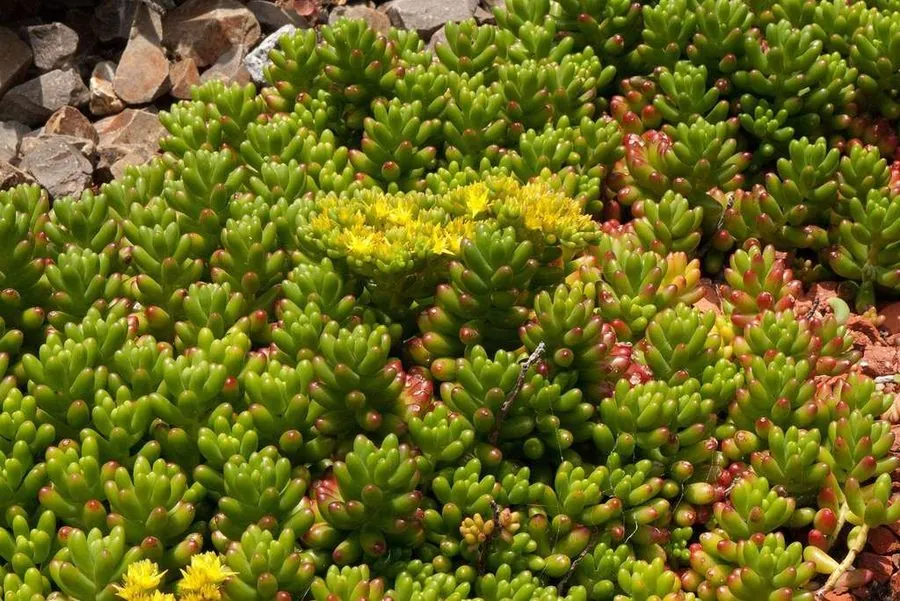

多肉植物 · 植物界
虹之玉 Sedum rubrotinctum

景天科景天属小型多肉，叶片圆润如糖果、日照充足时通体转红，易群生垂吊，原产墨西哥，英文名意为“果冻豆”。
- 分类
- 门被子植物门纲木兰纲目虎耳草目科景天科属景天属
- 栖息环境
- 墨西哥干旱山地的岩石坡地，喜光、干燥、通风
- 地理分布
- 原产墨西哥，世界各地盆栽栽培，中国各地多肉市场常见
- 保护级别
- 暂无评估
物种志
虹之玉为景天科景天属小型多肉植物，株高 10–20 厘米，茎匍匐或直立，叶片圆筒形，长 1–2 厘米，肉质光亮，绿色，日照充足、温差大时转为橙红或深红色。花星形，黄色，花期春季；果实为蓇葖果。
虹之玉原产墨西哥的干旱山地，喜阳光充足、凉爽干燥和通风良好的环境，耐旱怕积水，夏季高温时生长缓慢。它叶片圆润似糖果，英文名意为“果冻豆”；光照越足，叶色越红，光照不足则变绿、茎秆拉长。虹之玉容易掉叶，叶插繁殖简单，也常被用作多肉拼盘的材料；汁液对皮肤有轻微刺激性，修剪时注意避免接触眼睛，接触后及时用清水洗手，并放在儿童不易碰到的地方。
形态与习性
- 株高10–20 厘米，茎匍匐或直立
- 花期春季，花星形，黄色
- 果期花后结蓇葖果
- 光照喜充足阳光，光照越足叶色越红
- 水分耐旱，见干见湿，忌积水
- 土壤颗粒为主、排水良好的矿质土
- 繁殖叶插、枝插
- 主要用途多肉拼盘、垂吊盆栽
趣味知识
- 虹之玉叶片圆润似糖果，英文名意为“果冻豆”。
- 日照充足、温差大时，叶片会由绿转为橙红或深红色。
- 它容易掉叶，掉落的叶片可直接叶插繁殖。
- 虹之玉汁液对皮肤有轻微刺激性，修剪时避免接触眼睛。